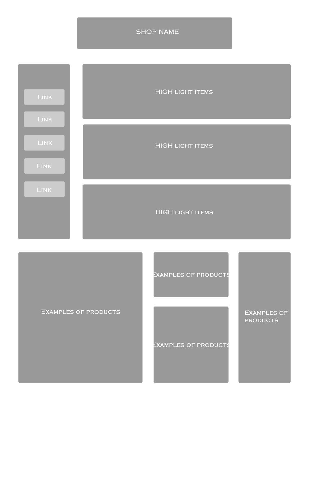

Today, we started making wireframes in class for the home page of our jewellery website. We worked off of several hand written ideas that we had, and each group member redid one of the ideas on Fireworks to better show the potential layout of the website. When deciding how to construct our home page, we consulted many well known jewellery websites, such as Tiffany, Cartier, and Van Cleef n Arpels. Below is my first HI-FI wireframe of our site's main page, as well as wireframes made by other members of my group:



After our discussion where we shared our storyboards, I realised that the title, and especially the sidebar, were taking up too much space in the page. It pushed the pictures down so that they can't be seen unless the viewer scrolls down. For my next draft, I plan of making the sidebar with the links much smaller and moving it more to the side so that the pictures can move up. In the Dreamweaver version, I then altered my design from the original wireframe a little bit. I made the sidebar and logo smaller. I also replaced the three horizontal pictures with one large one, because the original wireframe shapes didn't fit the available jewllery photos. The larger picture makes the page look more simple and sleek, and shows the detail of the product better.
Work in Dreamweaver and FireworksWhen working in Fireworks was really simple and fast. Furthermore, I really liked the slicing function, becuase that made things more convenient. However, that same feature also made it harder to edit small, individual portions. Another downside was that I couldn't see the coding behind the wireframe I was making.
Dreamweaver, on the other hand, displayed all the HTML and CSS that was involved in the page I was making. Furthermore, the pictures snapped better into the AP divs, so the end result was also a lot neater. Dreamweaver was also better with processing text and adding links, so that was more helpful in making the closer thing to the final product. A downside to Dreamweaver is that it's a little more complicated than Fireworks.
We repeated a similar process when making the outline for our subpages. We created a wireframe in Fireworks, then we moved on to Dreamweaver to create an actual template file; they are both shown below. The template only contains the logo and navigation bar, because these are constant on every page. The content varies from page to page, as the pictures are different; furtheremore, the About Us page most likely won't have any pictures at all, so we left the entire bottom region editable. After Ankeeta and I created our template, I moved on to making all the subpages. I created the files and put in the images that we already had. I ran into some issues with the placement and alignment of the images, but I fixed it using CSS.
After I finished starting up all the subpages, I worked with my group to build a GitHub and Dreamweaver link so that we can collaborate on the site together. 

Objectives: